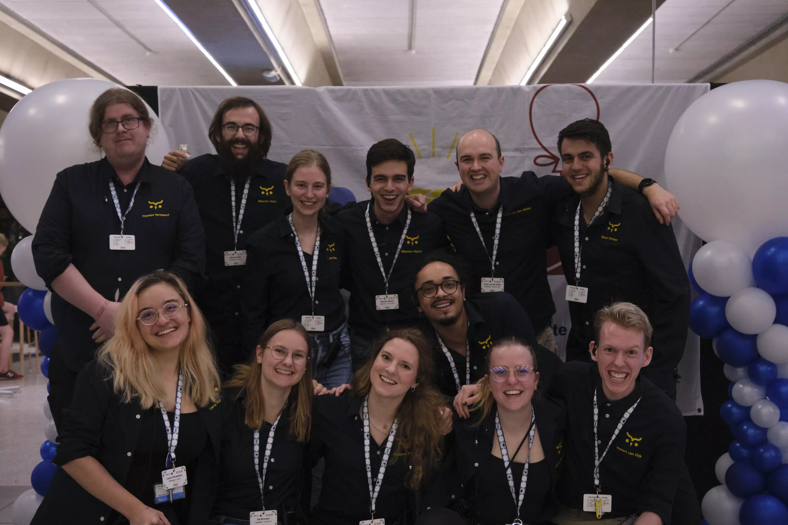

Contact
The organisation can be contacted at contact@2022.nwerc.eu. Companies interested in supporting the contest can contact extern@2022.nwerc.eu.
NWERC Coach Slack
Since a couple of years there is a NWERC organisation slack. Coaches are invited to join here for quick access to the organisation for questions.
Organisation
The NWERC 2022 is hosted by the Delft University of Technology and organised by W.I.S.V. ‘Christiaan Huygens’.
CHipCie
The CHipCie takes care of the programming contest within Delft and consists of the following people. 
Top Row
From left to right:
- Thomas Verwoerd, Commissioner of Coaches
- Maarten Sijm, Commissioner of Jury Affairs
- Elise Deen, Secretary
- Maarten Weyns, Commissioner of Systems Affairs
- Yoshi van den Akker, Commisioner of Operational Affairs
- Brian Witmer, Commissioner of Recruitment & Promotion
Bottom Row:
From left to right:
- Laura Pircalaboiu, Treasurer
- Els Brouwer, Qualitate Qua
- Nadyne Aretz, Chairwoman
- Raoul Bruens, Commissioner of Logistics & Activities
- Merel Steenbergen, Commissioner of External Affairs
- Robert van Dijk, Head of Systems Affairs